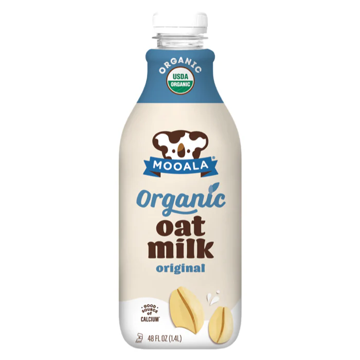
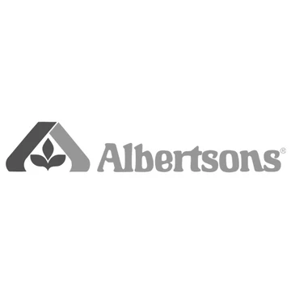
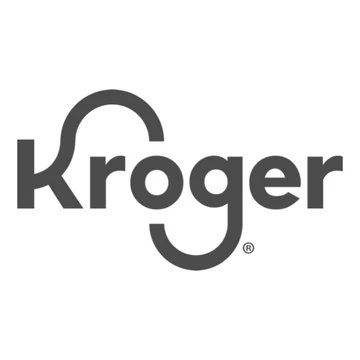
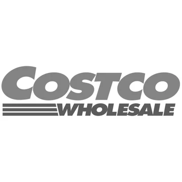

Organic Plantmilks
Unrivaled taste, quality ingredients and certified USDA-organic.
With Mooala, you can enjoy your plantmilks, knowing they're made
with clean ingredients and without toxic pesticides, preservatives
and artificial flavors.
Our Products
Simple
Almond Milk
Banana Milk

Oat Milk

Barista
Single Serve
Introducing Moola Simple
It's as simple as this: no gums, no oils, no filtes, just organic
goodness
Find us in your backyard





The Organic Differences
"I can't wait to get my daily dose of pesticides" -no one ever.
Non-organic plantmilks could be filled with GMOs, toxic
pesticides or synthetic ingredients. With Mooala, you can
rest easy knowing our ingredients are ethically sourced,
quality and our milks are always organic.
pesticides or synthetic ingredients. With Mooala, you can
rest easy knowing our ingredients are ethically sourced,
quality and our milks are always organic.
Sign up for our newsletter
Receive special offers and exclusive first looks at new products.
Mooala was founded with the goal of making USDA-organic plant-based
milks more accessible and affordable to U.S. households. Our
beverages are USDA-organic and made with good ingredients like real,
organic bananas and organic coconut cream.
We believe goodness should flow deeper than the beverages themselves, which is why we support non-profit micro finance organizations in developing countries. These groups provide entrepreneurs and economies with a “hand up” - not a hand out - and provide tremendous support to communities in need. A portion of all of our profits to support these organizations.
Thanks for helping us spread the love.
We believe goodness should flow deeper than the beverages themselves, which is why we support non-profit micro finance organizations in developing countries. These groups provide entrepreneurs and economies with a “hand up” - not a hand out - and provide tremendous support to communities in need. A portion of all of our profits to support these organizations.
Thanks for helping us spread the love.